Hok/Sok
Antibiotic Independent Plasmid Retention
A natural internal maintenance cassette relying on internal mRNA silencing that is an alternative to common antibiotic-based methods without relying on exogenous drugs
Purpose |
Background |
Experiment |
Results |
|---|
- Construct
- Plating
- Growth Curve
- Fluorescence
- Fluorescence Loss
- Sequence
- Plating
- Growth Curve
- Fluorescence
- Fluorescence Loss
- Sequence
- Conclusions
- Considerations
The ability to use plasmids as vectors to introduce genes of interest in E. coli is one of the most essential bioengineering tools. However, one of the limitations of transforming a bacterium with a plasmid, is that the organism will eventually eject the plasmid over time. To counter this, scientists add a positive selective pressure on E. coli to retain plasmids carrying resistance genes through the use of antibiotics.
While this technique has proven to be reliable and effective, there are many limitations. The prevalent use of antibiotics both for medical and agricultural purposes has rapidly increased the number of pathogens that harbor antibiotic resistant genes. As a result, there is a pressing need to find an alternative to antibiotic use for plasmid maintenance to prevent the spread of antibiotic resistant genes.
Many synthetic biology projects which focus of solving health or environmental issues are confined to the lab because of these limitations. The University of Maryland iGEM team seeks to solve this problem by developing an alternative plasmid maintenance system that should liberate other iGEM teams from the dependance on antibiotic usage.
We hypothesized that Hok-Sok, our plasmid maintenance system, could maintain recombinant plasmids, as it does natural ones. We also hypothesized that Hok-Sok would have a slight negative effect on bacterial growth rate, in line with other alternative maintenance systems such as sRNBC (K817015), as well as the amount of protein expression due to competing parallel promoters. In order to answer these questions, we set up a variety of experimental tests.
The Hok-Sok cassette contains three genes:
- hok - host-killing
- sok - suppressor of killing
- mok - modulator of killing
Hok, located on the forward strand, encodes a 52 amino acid toxin that is capable of permeating the cell membrane, leading to a loss of electrochemical potential and cell death. The hok toxin acts with "single-hit" kinetics, indicating that a single molecule of translated hok is sufficient for killing a cell. Hok is freely transcribed under a weak promoter.
In order to stay alive, cells need to be able to block translation of the hok transcript. Mok, located on the same locus as hok, modulates hok translation by the ribosome. Mok is located on a different reading frame than hok and the two genes are always co-transcribed as part of a single mRNA transcript.
Mok is then recognized by sok, a short ssRNA "antitoxin" transcribed under a strong constitutive promoter on the reverse strand of the Hok-Sok cassette. Sok is capable of forming a double-stranded RNA duplex near the 5'-end of the mok transcript, indirectly blocking the hok open reading frame and preventing the transcript from being read. The dsRNA duplex is then recognized by RNAse III, leading to enzymatic degradation of the silenced transcript.

This cassette promotes plasmid maintenance because the hok mRNA, due to a high degree of secondary structure, has a long half-life, measured at 20 minutes, or approximately the time of one growth cycle. Sok, on the other hand, has a half-life of only 30 seconds. Thus in order to continue suppressing hok translation, the cell must retain the plasmid and the sok gene through cell division.
If the plasmid is "lost", or not passed down to the daughter cell, then both the hok and sok coding regions will be lost. However, due to its long half-life, previously transcribed hok mRNA will remain in the cell while previously transcribed sok rapidly degrades. No longer silenced, hok mRNA will be then translated, killing the daughter cell that did not maintain the plasmid. In nature, this is how the Hok-Sok system maintains antibiotic resistance in E. coli in the absence of antibiotic pressure.
Hok/Sok Construct
Prior to experimentation, we had to insert the Hok-Sok construct into pSB1C3 in order to make it a BioBrick. We originally planned to PCR amplify the cassette out of the R1 plasmid of E. coli, but we were unable to find an suitable wild-type strain that was easily available. Instead, we turned to synthesizing the construct as a gBlock from IDT. As a 580 bp dsDNA fragment, it was suitable for addition via Gibson Assembly into pSB1C3.
Plating Studies
While our fluorescence studies were effective at measuring protein expression over time, we wanted a second test that would more directly measure whether or not plasmids were being maintained throughout generations. Using the identical cultures as the fluorescence tests, we devised a plating protocol involving a challenge of chloramphenicol every 24 hours.
- Dilute each culture (1 : 106) with LB media
- Plate 10 µL of each diluted culture on a LB-agar + chloramphenicol plate
- Incubate plates overnight
- Count colonies the next day
The goal in doing this was to determine how many bacteria were surviving by retaining their plasmids. We did not discriminate between the color of colonies.
For continuing generations of BL21 strain E. coli, we observed that on the plates for groups A and B, there was growth but no redness. If the bacteria were retaining the plasmids with the chloramphenicol resistance, the RFP gene should have been expressed and the colonies should fluoresce. We hypothesized that the chloramphenicol resistance gene was being recombined into the bacterial genome so the bacteria could therefore freely eject our inserted plasmids. As BL21 carries the gene for recombinase, it is possible. However, DH5α, as a common cloning strain, does not have recombinase. We created a new generation with every group (A, B, C, D, and E) to test whether the same plate would have similar results or once the bacteria stopped fluorescing, there would be no growth on the plates.
Growth Curve
While the Hok-Sok cassette may help to maintain a plasmid, it may also impact the rate of cell growth. We were unsure of the level of stress that came from additional hok and sok translation, and we decided to measure whether or not cultures containing the Hok-Sok construct would grow at a similar rate to control. We created a growth curve of Hok/Sok in comparison to controls to test the effectiveness of the Hok/Sok system in keeping the bacteria alive. We had four groups:
- Hok/Sok without chloramphenicol
- Hok/Sok with chloramphenicol
- RFP without chloramphenicol
- RFP with chloramphenicol
We started growing 250 mL cultures and monitored the OD at 600nm using a spectrophotometer over the span of 7.5 hours.
Fluorescence Studies
In order to determine if Hok/Sok was capable of maintaining a plasmid without antibiotic pressure, we decided to use a visual reporter gene to quantify the ability of Hok/Sok to maintain plasmids over many generations. We decided to use RFP along with a degradation tag as the reporter gene. The most suitable candidate was an unstable LVA-tagged RFP that has a half-life of 1 hour. The shorter half-life allows for more frequent measurements of protein production that would not aggregate over time.
We combined a constitutive promoter and RBS to the LVA-tagged RFP through 3A assembly. We transformed this construct to E. coli DH5a to confirm the effectiveness of this reporter gene and its expression through increased fluorescence. Afterwords we ordered a g-block of our Hok/Sok+reporter construct. The expression of this reporter gene is proportional to plasmid number. Therefore, we concluded that if the cells containing a plasmid with both Hok/Sok and reporter gene could maintain fluorescence over many generations without the positive pressure of antibiotics compared to our controls, Hok/Sok can be used as a viable plasmid maintenance system.
We used two E. coli strains for our testing. Originally, we used BL21 strain of E. coli because it is known to be the best for testing because the cell lacks proteases; the protein expression is optimal because the proteins are not digested by the enzymes. After testing BL21, we transitioned to the DH5a strain of E. coli because the cells lack recombinase.
Fluorescence Loss Analysis
Interested as to why our cells were losing fluorescence in the span of a week, we increased the level of protein expression in order to observe this effect on a larger scale. This was done by switching cell lines from DH5α to BL21, which is optimized for protein expression due to the removal of several proteases. We repeated plating experiments in triplicate in order to determine if fluorescence loss would be as dramatic in such a small span of time. Plates were exposed to UV light using a transilluminator in order to visually observe fluorescence loss over many generations.
In addition to our observations, we also wanted to make sure that our cultures had not been contaminated with a non-fluorescent, chloramphenicol resistant bacteria that had out-competed our intended culture. We thus performed a gram stain in order to verify that our bacteria were gram negative bacilli.
Sequence Analysis
In order to find a definite answer as to the loss of fluorescence, we took minipreps of our non-fluorescent DH5α cultures, digested them to extract their inserts, and separated them using agarose gel electrophoresis in order to determine whether or not they were the proper size. For samples that contained an insert of the proper size, the miniprepped plasmid was then sequenced in order to determine the genetic reason as to the fluorescence loss.
Plating Tests
Over time, all cultures appeared to maintain antibiotic resistance, except for the negative control, which experienced no pressure during its growth. The following figures demonstrate the presence of resistant colonies over many hundreds of bacterial generations. Most importantly, the Hok-Sok culture grown without antibiotic was shown to maintain chloramphenicol resistance. This sets up one of our major conclusions: the Hok-Sok cassette is capable of maintaining a recombinant plasmid for an extended period of time.
Negative Control (No Pressure)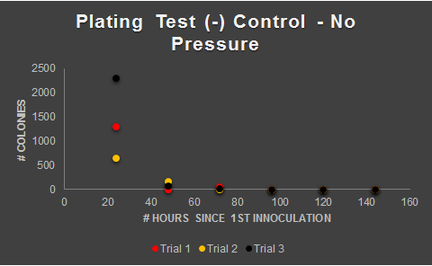Figure 1. Negative control was K1783002 (constitutive unstable RFP) grown in media without chloramphenicol. After 2-3 days, plates demonstrate fewer than 10 colonies per plate, suggesting that antibiotic resistance is now only minimally present in the culture. |
Chloramphenicol Pressure Only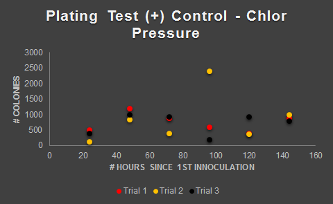Figure 2. K1783002 (constitutive unstable RFP) grown in media with chloramphenicol. Colonies persist through several days of plating, suggesting that antibiotic resistance was maintained throughout the test. |
Chloramphenicol + Hok-Sok Pressure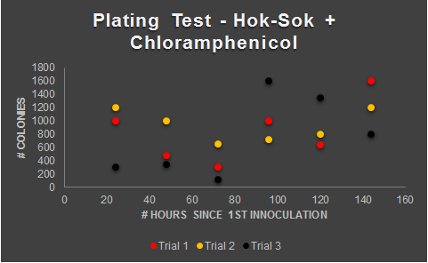Figure 3. K1783003 (constitutive unstable RFP under Hok-Sok regulation) grown in media with chloramphenicol. Colonies persist through several days of plating, suggesting that antibiotic resistance was maintained throughout the test. |
Hok-Sok Pressure Only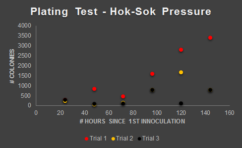Figure 4. K1783003 (constitutive unstable RFP under Hok-Sok regulation) grown in media without chloramphenicol. Colonies persist through several days of plating, suggesting that antibiotic resistance was maintained throughout the test. |
Growth Curve
Figure 5. Growth curves of parallel cultures grown with and without chloramphenicol. The presence of Hok-Sok on the inserted plasmid does not appear to have a major effect on the bacterial growth rate. This is in line with our qualitative observations, where we do not observe any major difference in cell density during plating or fluorescence studies.
Fluorescence Studies
Our fluorescence studies supported the findings of our plating tests. We were able to observe that fluorescence was rapidly lost in the negative control. This was expected due to plating tests demonstrating the loss of plasmid from that group. We were pleasantly surprised to observe that Hok-Sok was able to maintain fluorescence for a longer period of time than typical chloramphenicol pressure.
DH5α Cell Line |
|
Chloramphenicol Pressure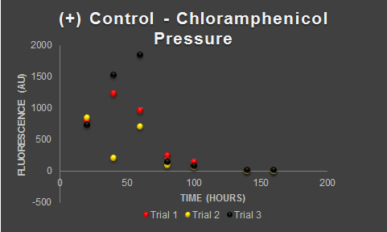Figure 6. Fluorescence measurements of K1783002 (Constitutive unstable RFP) in DH5α cells grown in media containing antibiotic. All measurements are blank-subtracted. Fluorescence is initially high, but rapidly diminishes over time. |
No Pressure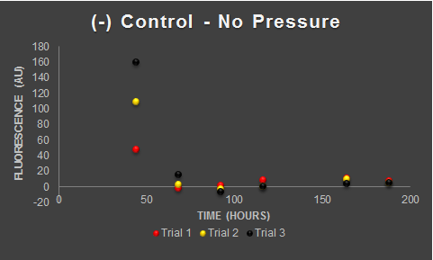Figure 7. K1783002 (Constitutive unstable RFP) in DH5α cells grown in media without antibiotic. Fluorescence is initially low and rapidly diminishes over time. This result supports the notion that cells grown without any pressure quickly lose their plasmids. |
Chloramphenicol + Hok/Sok Pressure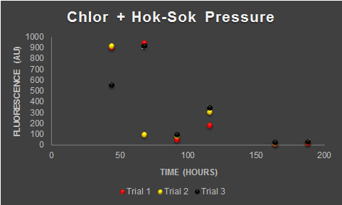Figure 8. K1783003 (Hok-Sok+Constitutive unstable RFP) in DH5α cells grown in media with antibiotic. Fluorescence is initially moderate and diminishes over time. The use of two maintenance systems does not appear to better maintain fluorescence levels than chloramphenicol alone. We suggest that the proximity of the Hok-Sok cassette to the RFP construct somewhat represses expression of RFP due to promoter interference, leading to a lower initial reading. |
Hok/Sok Pressure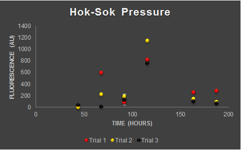Figure 9. K1783003 (Hok-Sok+Constitutive unstable RFP) in DH5α cells grown in media without antibiotic. Fluorescence is initially moderate, but remains relatively constant over time, a one-time spike notwithstanding. |
BL21 Cell Line |
|
Chloramphenicol Pressure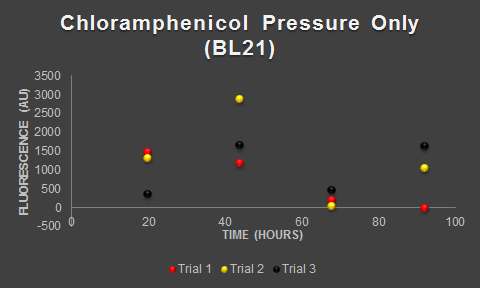Figure 10. Fluorescence measurements of K1783002 (Constitutive unstable RFP) in BL21 cells grown in media containing antibiotic. All measurements are blank-subtracted. Fluorescence is variable throughout testing suggesting an uncorrected factor influencing results. Note: Our initial tests using the BL21 cell line were inconclusive due the need to calibrate our testing protocol. |
No Pressure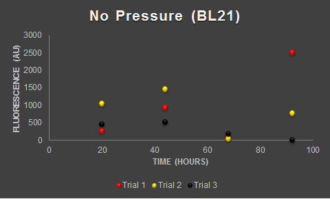Figure 11. Fluorescence measurements of K1783002 (Constitutive unstable RFP) in BL21 cells grown in media without antibiotic. |
Chloramphenicol + Hok/Sok Pressure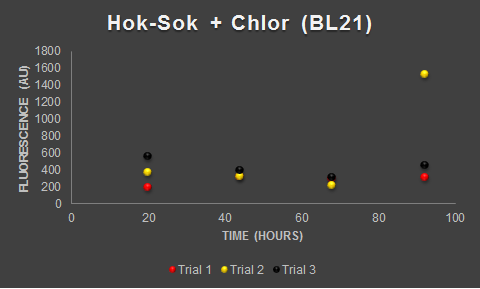Figure 12. Fluorescence measurements of K1783003 (Hok-Sok+Constitutive unstable RFP) in BL21 cells grown in media with antibiotic. |
Hok/Sok PressureFigure 13. Fluorescence measurements of K1783003 (Hok-Sok+Constitutive unstable RFP) in BL21 cells grown in media without antibiotic. |
Analysis of Fluorescence Loss

Figure 14. Over time, colonies appear to stop producing RFP. |

Figure 15. This effect occurs much more slowly when the Hok-Sok cassette is adjacent to the RFP construct. |

Figure 16. This effect occurs even when the culture is under chloramphenicol pressure. |

Figure 17. With or without added chloramphenicol, Hok-Sok appears to be able to maintain a relatively constant level of fluorescence.. |
Representative gram stain of culture. Gram staining of our samples confirms that our samples are gram-negative bacilli, making it highly unlikely that our cultures have been contaminated.
Sequence Analysis
Top right bands of gel are of negative control in DH5-alpha. They demonstrate that the cells no longer have the plasmid of interest. Gels generally show that plasmids are kept whenever a form of pressure is placed on the cell. Why then, is RFP not being expressed? Our sequencing results showed random mutations in the promoter and coding region of the RFP construct.
This is a valuable lesson that, with any BioBrick construct, mutations and evolution is inevitable. However, plasmids that were maintained with Hok-Sok alone (no chloramphenicol) did not display mutations in the RFP construct. The large difference in protein expression over multiple days, as shown by our fluorescence and plating tests, suggests to us that the presence of Hok-Sok, combined with the absence of chloramphenicol pressure, is putting a smaller evolutionary pressure on the bacterium.
Conclusions and Future Plans
Through our plating tests and fluorescence measurements, we were able to successfully observe the plasmid maintenance ability of the Hok-Sok system. In comparison to a negative control grown without chloramphenicol pressure, cells containing Hok-Sok were able to maintain their antibiotic resistance for a significant period of time, as shown from our plating tests.
In addition, we noted the ability of Hok-Sok had a negative effect on protein production, as shown from our fluorescence study. However, this level of production was consistent over a long period of time, contrasting with traditional pressure systems where mutations were able to build up quickly, shutting down production of RFP, which has no biological usefulness for the cell.
We thus suggest that the downregulation of RFP production via Hok-Sok is capable of decreasing the evolutionary pressure against the removal on non-essential genes. This effect will be further studied in later experiments, where the distance between the hok-sok cassette and a gene of interest is lengthened. Overall, we suggest use of the Hok-Sok system as an effective method for internal plasmid maintenance without the use of antibiotics.
Considerations
PCR of Hok-Sok Construct
Amplification of the Hok-Sok cassette is difficult due to the high inherent secondary structure in the construct. Hok ssDNA is capable of naturally folding into a stable secondary structure, resulting in early terminations and other side products. We recommend that a reaction buffer suitable for difficult templates be used, such as Phusion GC buffer + added DMSO.
Measuring OD of RFP Cultures
Due to the close proximity of the emission wavelength of RFP (584 nm) and the classical absorbance wavelength for measuring cell density (600 nm), it is difficult to accurately determine the cell density of cultures that are expressing RFP. Given more time to calibrate our testing measurements, we would either have used an alternative wavelength for measuring OD (>600 nm), used a hemocytometer as an alternate counting method, or switched to GFP as an alternative fluorescent marker whose emission wavelength differs from 600 nm by a greater amount.
Moving Forward
In the future there is great potential to use the Hok-Sok system both in vitro and in vivo. In the laboratory, using plasmids which contain the Hok-Sok cassette along with some sort of positive selection marker, such as a fluorescent protein, instead of an antibiotic resistance gene would permit for positive selection of desired colonies without the use of antibiotics.
Furthermore, the Hok-Sok system could have a transformative role outside the lab. Synthetic biology projects often rely upon genetically modified bacteria which are designed for release into the soil, water sources, and ingestion by animals. Our 2014 project, for example, involved E. coli that could one day detect an oyster pathogen, and the University of Toulouse 2014 iGEM team was interested in designing bacteria capable of defending trees against fungal attack.
If these bacteria carried antibiotic resistance genes, there would be ample concern about other bacteria acquiring this resistance through horizontal gene transfer. However, if the Hok-Sok system was used to maintain plasmids, it would reduce concern over increasing the number of antibiotic resistant bacterial strains.
In addition, there is potential to take advantage of the Hok-Sok cassette as a method of post-transcriptional control over a variety of genes. As hok is indirectly regulated by the upstream binding of sok to mok, there is potential to control protein expression through using the interplay of sok and mok to prevent the translation of various mRNA transcripts. Although we did not focus on this, there is great potential for experimentation.
As mentioned earlier, many synthetic biology projects, including those within iGEM, intend to release their final product into nature. As our testing supports the conclusion that Hok-Sok can successfully be implemented to maintain plasmids without antibiotics, it would be intriguing to test this further ourselves or see other iGEM teams test this by implementing the Hok-Sok cassette as the maintenance system on a project where the final product is intended for release into nature. Successful implementation of this would further prove the efficacy of Hok-Sok as an alternative plasmid maintenance system and as a method for combating the widespread use of antibiotics and growing population of antibiotic resistant bacteria.